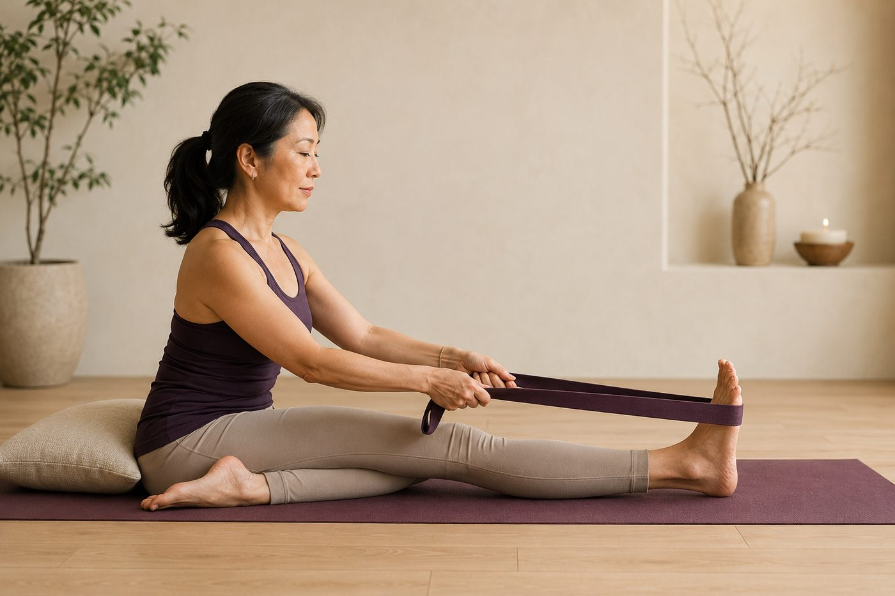

腿後總是很緊，一直拉就會鬆嗎？

你是不是也有一條「拉不完」的腿後？每天認真伸展，拉了好幾個月，前彎還是離腳尖一大截，甚至越拉越覺得緊、越拉越有一種快被扯開的感覺。先別急著怪自己不夠努力——你的腿後，很可能根本不是「太短」，而是另一種你沒想過的緊。
腿後緊，其實有兩種完全不同的緊
大腿後側那一整片，叫膕旁肌，是三條肌肉組成的肌群，上端接在骨盆最下方的坐骨，一路往下跨過膝蓋後側。它會「緊」，但緊的原因分成兩種，而且處理方式剛好相反。
- 真的短縮：肌肉的靜止長度真的變短了，常見於長期固定姿勢、很少讓腿完整伸展的人。這種需要的是有耐心、漸進式的伸展，慢慢把長度養回來。
- 神經保護性緊繃：肌肉長度其實正常、甚至偏長，但你的神經系統基於某個理由，把它「拉緊戒備」。你摸起來、動起來覺得緊，但那是張力，不是短。
這裡藏著一個很多人一輩子沒想通的關鍵：緊，不一定等於短。一條被拉得又長又久、還隨時處在張力下的肌肉，摸起來一樣硬邦邦、一動就緊。如果你把所有的緊都當成「短」來狂拉，遇到第二種，方向從一開始就錯了。
腿後緊，不代表它短。它也可能是被拉太長、又太久，神經才把它繃著保護。
骨盆前傾，會讓腿後「整天被拉著」
為什麼一條肌肉會被長期拉在張力下？最常見的兇手是骨盆前傾。我們久坐一整天，前側的髂腰肌被摺著、越來越緊，後側的臀大肌卻被坐著壓到「睡著」、使不上力，一緊一鬆之下，骨盆就被往前拉、往下倒。
骨盆一往前倒，接在坐骨上的膕旁肌就跟著遭殃：骨盆前傾時，坐骨會往後往上翹，等於把腿後肌群的上端整個往上拉開。於是它一天二十四小時都被撐在接近極限的長度，你只要一前彎，馬上就到底、馬上就緊。這時候你再拚命拉它，等於在一條早就被拉太長的肌肉上再加碼，神經只會更緊張、把它繃得更死。想更完整了解這個連鎖反應，可以看〈骨盆前傾＝小腹凸？先看懂再收〉。
核心撐不住，身體會「借」腿後來穩定
另一個常被忽略的原因，是核心。負責從深層穩定骨盆和脊椎的，是腹橫肌、多裂肌和橫膈膜這組深層核心，它們像一件內建的束腹，隨時幫你把中軸鎖穩。當這組肌肉沒被喚醒、撐不住時，身體不會就這樣散掉，它會去「借」別人來頂替——最常被抓來當替代穩定器的，就是腿後和下背。
一條肌肉如果整天都在待命、幫你維持穩定，它當然放不鬆。這也解釋了一個很多人的困惑：為什麼拉的當下有鬆一點，隔天卻又緊回原點？因為讓它緊的真正原因（不穩、要代償）根本沒被解決，你只是暫時把症狀壓下去而已。以下幾個訊號，代表你很可能是這種「保護性／代償型」的緊：
- 認真拉了好幾個月，柔軟度幾乎沒進步。
- 拉完當下有鬆，睡一覺又回到原點。
- 前彎時往往是下背先圓、腰先痠，而不是腿後先有感覺。
- 除了腿後，你平常也常覺得下背緊、久坐後屁股沒什麼力氣。
所以，不是不能拉，是要先拆掉「緊的原因」
先講清楚：伸展沒有錯，真的短縮的人就是需要漸進伸展。問題出在「只拉、拉很用力、拉之外什麼都不做」。如果你是骨盆前傾或核心代償這一型，正確的順序是先把源頭處理掉，腿後才會真的願意放鬆——喚醒臀大肌、找回深層核心的穩定，讓骨盆回到中立，腿後不再被整天拉著，張力自然會退。伸展時也要先學會從髖關節摺、而不是拱腰硬鑽，這樣才真正拉到腿後、又不傷腰椎，細節在〈前彎的關鍵是先「摺髖」〉裡講得很清楚。
壁繩在這裡特別好用。你抓著繩子、把身體往後坐進繩子的支撐裡，繩子幫你分擔體重、給脊椎一點溫和的牽引，你的神經會收到「有人扶著、很安全」的訊號，就比較願意放掉那份戒備的緊繃；同時繩子替你分擔了穩定的工作，腿後不必再硬撐著當穩定器，才有機會真正被伸展開來。這就是為什麼很多身體很緊、越拉越挫折的人，反而在壁繩上第一次摸到「鬆」的感覺。
與其猜自己是「短」還是「不穩」，不如先看清楚
來教室做一次 AI 體態檢測（現場做），老師能實際看出你的骨盆是不是前傾、核心穩不穩、腿後緊到底是哪一種，再給你一個對的起點，不再瞎拉。
預約首次 NT$199 AI 體態檢測今天可以先記住的一件事
如果這篇只留一句話，那就是——腿後緊，先別急著更用力地拉，先問問它「為什麼緊」。真的短縮，就有耐心、循序地伸展；但如果你拉了好幾個月都沒進步、拉完隔天又緊回來，那答案很可能在骨盆和核心，不在腿後本身。先把臀部和深層核心叫醒、讓骨盆回中立，再配合從髖關節摺的正確前彎，你會發現腿後其實比你想的更願意放鬆。這條路是慢慢來的，一次到位反而容易受傷，給身體一點時間，方向對了就會走到。
本頁為體態與姿勢的一般衛教與練習分享，非醫療診斷或治療。若有疼痛、舊傷或特殊病史，請先諮詢合格醫療專業人員。